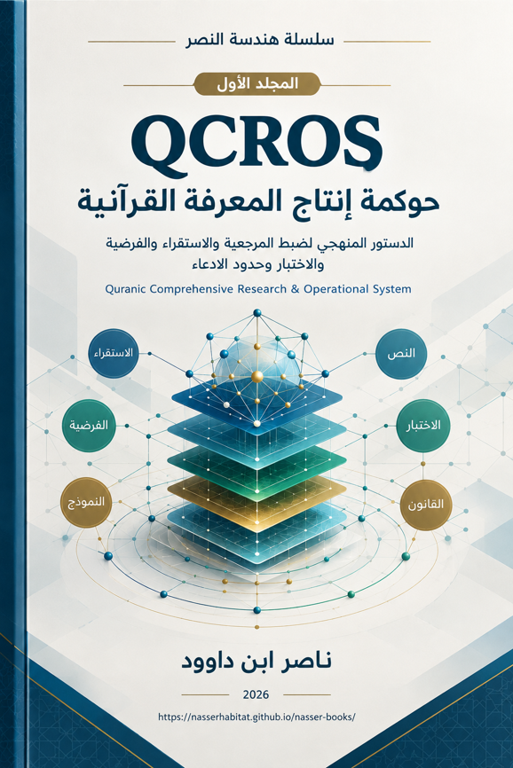

ناصر ابن داوود

نسخة نصية مستخرجة من ملف Word الذي قدمه المؤلف؛ راجع المصدر الأصلي.
جارٍ تجهيز القارئ…
سلسلة هندسة النصر
المجلد الأول: QCROS — حوكمة إنتاج المعرفة القرآنية
الدستور المنهجي لضبط المرجعية والاستقراء والفرضية والاختبار وحدود الادعاء
Quranic Comprehensive Research & Operational System
ناصر ابن داوود — 2026
المحتويات
مقدمة المجلد الأول
الفصل الأول: المسلمات التأسيسية لمنظومة QCROS
المبحث الأول: اتساق القول القرآني
المبحث الثاني: كلية المرجع وتكامل الوظائف
المبحث الثالث: أولوية الشبكة على المورد المعزول
المبحث الرابع: كفاية المدونة قبل الإغلاق
المبحث الخامس: فصل الرتب ومنع القفز الاستدلالي
المبحث السادس: قابلية الناتج البشري للمراجعة واستقلال المرجع
المبحث السابع: قانون الفصل بين مراتب البيان القرآني — قانون التمايز الوظيفي للمفردات
الفصل الثاني: سلم الأدلة ومصافي الاختبار
هوية الدليل وفصل طبقات المعالجة
بوابات الإمكان: G/R/L
مصافي السياق والشبكة والنقض والاستقلال والقرار
الفصل الثالث: القوانين التشغيلية لمنظومة QCROS
دورة QCROS ونظام حالات الادعاء
القوانين التشغيلية الاثنا عشر
أوضاع التشغيل ومعايير اكتمال البحث
سجل إغلاق الفصل الثالث
خاتمة المجلد الأول
الفهارس التحليلية الشاملة
بيان السلسلة
تأتي هذه الطبعة ضمن «سلسلة هندسة النصر»، وهي سلسلة ثنائية تميز بين مستويين متلازمين ولا تخلط بينهما: حوكمة إنتاج المعرفة، وحوكمة الفعل وقراءة المآل. يحمل هذا المجلد الأول الدستور المنهجي لمنظومة QCROS، بينما ينتقل المجلد الثاني إلى «هندسة النصرة» بوصفها مجال المسؤولية البشرية عن الوسع والفعل والتعلم، مع إبقاء النصر والتوفيق والمآل الكامل خارج دعوى الملكية البشرية.
المجلد الأول: QCROS — حوكمة إنتاج المعرفة القرآنية
المجلد الثاني: هندسة النصرة — من حوكمة الفعل إلى قراءة المآل
العلاقة بين المجلدين ليست علاقة تكرار، بل علاقة تسليم منهجي: المجلد الأول يضبط صلاحية الادعاء، والمجلد الثاني يضبط مسؤولية الفعل ونزاهة قراءة نتائجه.
مقدمة المجلد الأول
من تفسير القول إلى مراقبة إنتاج المعرفة
لم تعد أزمة التعامل مع القرآن محصورة في نقص الشروح أو قلة التفاسير؛ فقد تراكم حول الكتاب قدر هائل من الأقوال والمناهج والتأويلات. وإنما تكمن الأزمة الأعمق في غياب نظام واضح يراقب الطريق الذي يسلكه الباحث من الشاهد القرآني إلى النتيجة التي يعلنها. فكثيرًا ما يبدأ النظر بلفظ ثابت في القرآن، ثم ينتقل منه إلى معنى محتمل، ومن المعنى إلى تصور نظري، ومن التصور إلى قانون عام، دون أن تُفصل هذه المراتب أو يُبيّن الجسر الذي سمح بالانتقال بينها.
من هنا ينطلق هذا المجلد. فهو لا يقترح تفسيرًا شاملًا جديدًا، ولا يدّعي امتلاك المعنى النهائي للقرآن، وإنما يؤسس لمنهج يراقب كيفية إنتاج الادعاء المعرفي: من أين بدأ؟ وما مادته؟ وما نوع دليله؟ وما البدائل التي استبعدها؟ وهل خضع للاختبار العكسي؟ وما مرتبته بعد الاختبار؟
إن الفرق جوهري بين أن يقول الباحث:
هذا ما ورد في القرآن.
وأن يقول:
هذا ما لاحظته في موارد القرآن.
ثم أن ينتقل إلى: